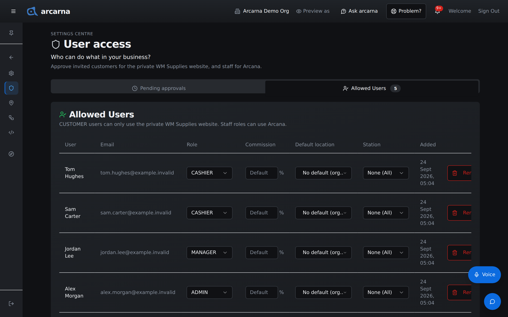
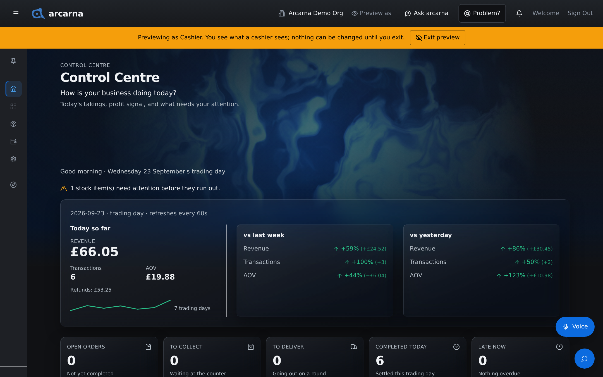
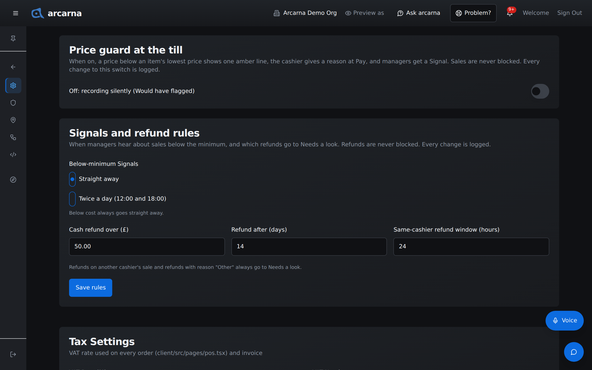
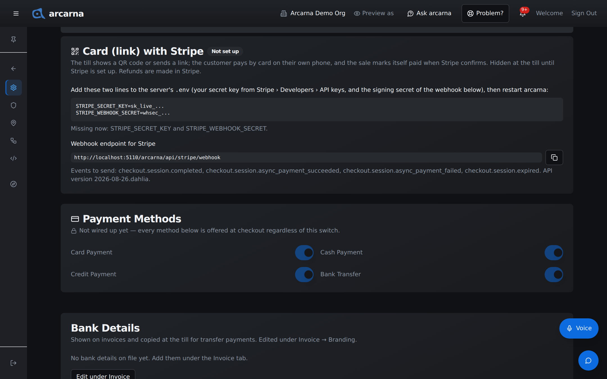
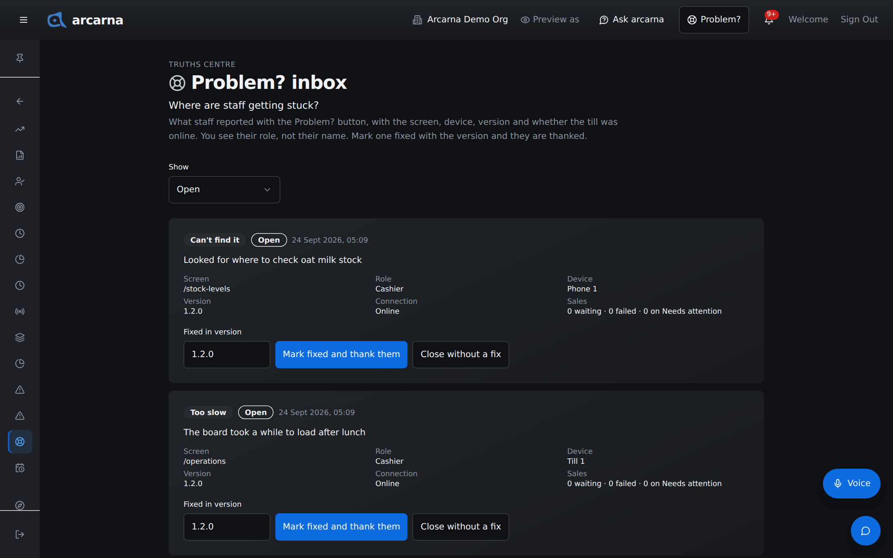

Staff training manual
Staff training manual
The jobs only admins and the owner do: letting people in and setting their roles, checking what each role sees, locations, the price guard, card payments by link, label printers, WhatsApp, the privacy notice, the Problem? inbox and staff targets.
Who this section is for
Admins and the owner
Everything in this section is for ADMIN and OWNER. Most of it lives in the Settings Centre, and a few pages sit in the Truths Centre. Managers can open some of the same Settings tabs, but the switches described here only work for admins: the server refuses anyone else, even if they find the page.
Almost every change you make here is logged: who changed it, when, and from what to what. That is deliberate. These settings decide what staff see and how money is handled, so there is always a record.
| Role | What they can set up |
|---|---|
| ADMIN | User Access, Locations, Developer, the Flags tab, business details and tax, the price guard, the Signals and refund rules, the customer privacy notice, Ask arcarna's limit, staff targets, the Truths at a glance layout, the Problem? inbox and Preview as. |
| OWNER | As an admin, plus the owner-only pages: Friction Truths, Customer data access, Audit Log and System Activity. In User Access the owner shows as SUPER_ADMIN with a crown. |
Settings Centre · the Settings page
The Settings tabs
Settings answers one question: how is arcarna set up for your business? Its tabs are listed under it in the menu, so you can go straight to one. Each tab holds a stack of cards; a few cards are marked as not wired up yet, and they say so plainly.
| Tab | What an admin does there |
|---|---|
| General | The business name, Business Information (name, phone, address, email), the Customer privacy notice and complaints contact, Price guard at the till, Signals and refund rules, and Tax Settings (VAT rate and VAT number). Save the business and tax cards with Save business & tax settings. |
| Imports | Product and customer spreadsheet imports. Managers and above. |
| Payment | Card (link) with Stripe, the bank details shown on invoices, and Loyalty redemption (what a point is worth at checkout). |
| Invoice | Branding for receipts and invoices, including the bank details, and the email receipt template. |
| System | Devices · Label printer, This device, and Multi-Location. The first two are saved on the device you are holding, not for the whole shop. |
| Integrations | Ask arcarna (Section 10), the shop website manager, and WhatsApp Business. |
| Cashiers | Commission settings and cashier profiles. Managers and above. |
| Operations | Timing for the Operations board: what counts as on time, when a card warns, and who picks up a new order. Saved for every tablet. Managers and above. |
| Users | A pointer to User Access, with Open User Access. |
| Flags | Feature flags: switches for features still being finished. Admins only. Changes reach open tills within about a minute. |
Settings Centre · User Access
Letting people in and setting their role
Nobody sees business data until an admin lets them in. User Access answers who can do what in your business? It has two tabs: Pending approvals (people waiting) and Allowed Users (everyone already in). The number waiting shows as a badge beside the title.
Approving a new person
- Ask them to sign in once. They see an Access pending screen, and they appear under Pending approvals with their name, email and when they asked.
- Select Approve access. A window titled Approve access opens.
- Choose their Role. It starts on CUSTOMER, which is for the private shop website only, so change it to the staff role they need.
- Select Approve. Their Access pending screen notices within 30 seconds and lets them in.
If you do not know the person, select Deny request instead.
| Role in the list | What it means |
|---|---|
| CUSTOMER | The private shop website only. No staff pages at all. |
| CASHIER | The till, the board, My run, Stock levels, their own shifts and their own performance. Never cost prices; customers' phone and email masked. |
| MANAGER | The back office: products and cost, customers (still masked), Credit List, invoices, Evidence and Truths about the team below them. |
| ADMIN | Everything in this section, and customers' contact details. |
Changing someone later
Open Allowed Users. Each row can be changed in place and saves as soon as you choose:
| Column | What it does |
|---|---|
| Role | Changes their role: CUSTOMER, CASHIER, MANAGER or ADMIN. |
| Commission | Their own commission rate, in percent. Leave it blank to use the shop's default rate from the Cashiers tab; blank is not the same as 0. |
| Default location | The location their sales go to. No default (org default) means their open shift's location, or the shop's default store. |
| Station | Their place on the Operations board: collection, delivery or both. None (All) means no station. |
To take someone's access away, select Remove… on their row, tick I understand this user will lose access immediately. and select Remove access. They cannot sign in again until they are approved again.

Checking what staff see
Preview as
Before you change a role, or when someone says "I can't see it", check for yourself. Preview as in the header shows arcarna exactly as a manager or a cashier would see it, through the same checks the server makes. You do not need a second login.
- On a computer or tablet, select Preview as in the header. It is not shown on a phone.
- Under See the app as another role, choose Manager or Cashier. arcarna reloads on the Control Centre.
- An amber strip stays across the top: Previewing as Cashier. You see what a cashier sees; nothing can be changed until you exit. Look around: the menu, the Centres, the masks and the missing cost prices are all as that role gets them.
- Select Exit preview on the strip (or in the Preview as menu) to go back to your own view.
Nothing can be saved during a preview, so you cannot change data by accident. The preview lasts for that browser tab only, and starting and ending one is logged.

Settings Centre · Locations
Locations
Every shop can run more than one store; there is nothing to switch on, only locations to add. Locations lists each store with its address, contact, revenue, orders and status, and totals across the top. You can also reach it from Manage locations on Settings › System.
- Select Add location. Fill in Location Name, Phone, Street Address, City, County, Postcode and Email.
- Leave Active location ticked. Inactive stores are hidden from normal selection.
- Select Create. To change a store later, select Edit on its row, then Update.
- One store is the Default store: where sales go when nothing else says otherwise. To change it, select Set default on another store.
Stock on a row shows that store's products, stock and sale prices. The location selector at the top of the page switches which store this device is working in, and reloads the page.
Settings › General · prices
The price guard and the review rules
Every product has a minimum price (Section 6). What happens when something sells below it is up to you. Both cards are on Settings › General, and every change to either is logged.
Price guard at the till
The switch starts off. While it is off, the card reads Off: recording silently (Would have flagged): the till shows nothing, but every sale below the minimum or below cost is still recorded, and you can read them in Would have flagged in the Truths Centre. Use that quiet period to see how often it happens and whether your minimums are right.
Turn it on and the till changes: a price below an item's lowest price shows one amber line, the cashier chooses a reason at Pay, and managers get a Signal. Sales are never blocked, and cashiers never see cost.
- Open Settings › General and find Price guard at the till.
- Turn the switch on. You see Price guard is on.
- Tell your staff before their next shift what the amber line means and that they will be asked for a reason.
Signals and refund rules
| Setting | What it decides |
|---|---|
| Below-minimum Signals | When managers hear about sales below the minimum: Straight away, or Twice a day (12:00 and 18:00). A sale below cost always goes straight away. |
| Cash refund over (£) | A cash refund above this goes to Needs a look. Default £50.00. |
| Refund after (days) | A refund this many days or more after the sale goes to Needs a look. Default 14. |
| Same-cashier refund window (hours) | How soon after their own sale a cashier's refund on it is counted in the Price overrides Evidence. It does not send the refund to Needs a look. Default 24. |
Refunds on another cashier's sale, and refunds with the reason "Other", always go to Needs a look. Refunds are never blocked. Select Save rules when you are done.

Settings › Payment · card payments by link
Card (link) with Stripe
Card (link) lets a customer pay by card on their own phone: the till shows a QR code or sends a link, and the sale marks itself paid when Stripe confirms. Section 3 shows it at the till. It stays hidden at the till until Stripe is set up, and setting it up is done on the server, not in a form: arcarna never shows a Stripe key on screen.
The card on Settings › Payment shows Not set up or Stripe connected (with test or live), and, while it is not set up, exactly what to do.
- In your Stripe account, copy your secret key from Stripe › Developers › API keys.
- Still in Stripe, add a webhook. Use the address shown under Webhook endpoint for Stripe on the card (it ends /api/stripe/webhook; the copy button copies it), and send the events the card lists: checkout.session.completed, checkout.session.async_payment_succeeded, checkout.session.async_payment_failed and checkout.session.expired. Copy the webhook's signing secret.
- Whoever looks after the server adds the two lines the card shows, STRIPE_SECRET_KEY and STRIPE_WEBHOOK_SECRET, to the server's settings file, then restarts arcarna. The card says which of the two is still missing.
- Reload Settings › Payment. The badge reads Stripe connected, and Card (link) appears at the till.
- Take a small test payment with Card (link) before using it with customers.

Settings › System · on each device
Label printers and device names
Two cards on Settings › System are set once on each till, tablet or phone, because they are remembered on that device only. Any member of staff can do them, but it is quickest if you walk round the shop and do every device at once.
Pairing a label printer
arcarna prints order and product labels on a Niimbot B1 over Bluetooth, on 50 × 30 mm labels. Bluetooth printing only works in some browsers: use Chrome or Edge on a computer, or the free Bluefy app on an iPhone or iPad. Safari cannot print labels. If the browser cannot print, the card says so and what to use instead.
- Turn the printer on and bring it near the till.
- Open Settings › System and find Devices · Label printer. The status reads No printer connected on this device yet.
- Select Pair a printer and choose the printer in the list the browser shows.
- The status changes to Connected to the printer's name, with its battery level.
- Under Test label, select Print. A test label with a price and barcode should come out.
Next time, the button reads Connect. Forget this printer removes the pairing from this device.
Naming each device
The This device card names the device from a fixed list: Till 1 to Till 6, Counter tablet, and Phone 1 to Phone 6. The name goes with every Problem? report and error report, so you know which device had the trouble. There is no free-text name, because a typed name could be a person's. Staff can also set it the first time they use Problem?.
Settings › Integrations · WhatsApp
WhatsApp messages
Three things send WhatsApp messages without anyone seeing the customer's number: Message the customer instead on a customer (managers, Section 7), Send payment reminder on the Credit List, and Send by WhatsApp for a Card (link). WhatsApp only allows business messages from approved templates, so nothing is sent until Meta has approved them.
The WhatsApp Business card on Settings › Integrations shows whether it is Enabled, the Webhook URL to give Meta, a Set or Missing line for each server setting, the connected number, and a Setup checklist. The secrets themselves live on the server and are never shown.
- Work through the Setup checklist on the card with whoever looks after the server and your Meta account.
- Under Message templates, select Sync templates. arcarna's templates are listed, marked LOCAL until Meta has seen them.
- Submit them for approval in Meta's WhatsApp Manager. This includes please_call_us, the "please call us on the shop number" message.
- When they show as APPROVED, the buttons that use them work. An unapproved template is refused.
- Fill in Phone under Business Information on Settings › General, so "please call us" can name the shop's number.
Settings › General · customers' rights
The customer privacy notice
Customers have a right to know how you use their details and whom to contact with a data protection question or complaint. The card Customer privacy notice and complaints contact on Settings › General holds both. It starts empty: you write the wording, and nothing is shown to customers until you fill it in.
- If your notice is already on your own website, put its address in Privacy notice web address (optional). Otherwise write it in Privacy notice text (optional) and arcarna shows it on a page of its own.
- Fill in Complaints contact name and Complaints contact email. The contact is only shown once it has an email.
- Select Save privacy details. The line under the boxes says what customers now see, with See what customers see to check it.
Once filled in, links appear on the shop site and on receipts. If Ask arcarna is set up, list Anthropic as a processor in the notice (Section 10).
Truths Centre · what staff report
The Problem? inbox
When anyone presses Problem? (Section 1), the report lands in the Problem? inbox in the Truths Centre. It answers where are staff getting stuck? Each report shows what was picked (such as Too slow), the note if there is one, and what came with it: the Screen, the Role, the Device, the Version, the Connection, and the Sales waiting, failed or on Needs attention. You see the reporter's role, never their name.
- Open the inbox. Show starts on Open; you can also pick Fixed, Closed or All.
- Read the report and try the same screen on the same kind of device.
- When it is fixed, check the version under Fixed in version and select Mark fixed and thank them. The person who reported it gets a Signal thanking them, with the version.
- If there is nothing to fix, select Close without a fix. Reopen brings a report back.

The owner only
Friction Truths and the usage record OWNER
Every staff device quietly keeps a usage record: which screens are open, for how long they are actively used, the titles of messages staff see, calls to the server that are slow or fail, crashes and time offline. It is recorded by role and by device, never by person, and it is not recorded during Preview as. Names and numbers are cut out of message titles before they are stored.
Friction Truths in the Truths Centre turns that record into one question: where do staff get stuck? Only the owner can open it, and it is not for staff reviews.
| Part | What it tells you |
|---|---|
| Window | Last 7 days, 2 weeks, 4 weeks or 12 weeks. |
| Not enough data yet | Shown for the first two weeks, with how many days are recorded. The rankings wait until a few bad minutes can no longer make a screen look worse than it is. |
| Pain per active hour | Each screen scored by its trouble (crashes count most, then Problem? reports, then error messages and failed calls, then slow calls) over the hours it was really in use. |
| Messages staff see | Which messages appear most, and how often as an error. |
| Active time by role and Sale funnel by role | Where each role spends its time, and how many sales started ended up placed. |
| Slow and failed calls | Which calls to the server were slow or failed, including the sale itself. |
| Device health | Each named device: last seen, version, crashes, time offline. Works from day one. |
The Problem? inbox button at the top shows how many reports are open. Every Monday, once there are three weeks of data, you get a Signal with the five worst or fastest-rising screens.
The Improvement study (screen recordings) card is off, and no recorder is connected in this release. Turning on Announce a study window only shows staff a notice on up to five chosen screens, for at most 14 days.
Truths Centre · targets
Staff targets
Staff see coloured targets on My performance and managers on Staff Performance (Section 9). Staff targets answers what counts as on track? Managers can read the page; only admins can change it. Targets carry no pay, and there is no money on the page.
Green is met, amber is close, red is not close, and grey means too little data. In force shows the current version and when it was set; if none has been set, every colour is grey.
- Open Staff targets. Under Change the targets, tick each measure you want a target for, such as Collections ready on time, Deliveries on time or Received to ready (median).
- Fill in Green at least and Amber at least (or at most for measures where lower is better, such as times). Data needed sets how much a person must have done before a colour shows instead of grey: orders, hours or board flags acknowledged, depending on the measure. Leave it blank for the default shown in its label.
- Add a line under Why the change (optional), so the history explains itself.
- Select Save as a new version. You see Targets saved as version and the number. The old version stays in History and in the admin log.
Before you go live
The owner's set-up checklist
These are the jobs to do once, before or soon after the shop starts using v1.2. Some need whoever looks after the server.
| For | What to do |
|---|---|
| People | Approve everyone in User Access with the lowest role that does the job. Check with Preview as. |
| Business details | Business Information, Tax Settings and the shop's phone on Settings › General. Branding and bank details on Settings › Invoice. |
| Card (link) | Stripe keys on the server and the webhook in Stripe, as above. Hidden at the till until both are set. |
| Ask arcarna | An Anthropic key on the server, then check the monthly limit under Settings › Integrations. Section 10. |
| Label printers | Pair and print a test label on each till that prints. |
| Device names | Set This device on every till, tablet and phone. |
| Sync templates and get them approved in Meta's WhatsApp Manager. | |
| Email invoices | The email service key on the server. Until then, Email invoice to customer is turned off and says why. |
| Price guard | Leave it off for the silent recording period, read Would have flagged, then turn it on. |
| Staff targets | Set them. The first 4 weeks are amber only. |
| Privacy | Fill in the customer privacy notice. Give staff their two notices. |